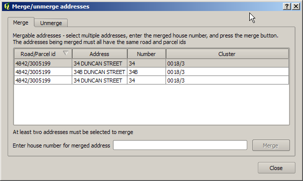

See the overview for a high level description of address uploads
This dialog provides functions for merging supplied addresses into a single address (for example a range of flats), and for unmerging address that have already been merged. The dialog is accessed from the address linking screen.
The dialog has two tabs - one for merging addresses and one for unmerging addresses. The dialog only displays addresses with on the same parcel, and linked to the same road as the current parcel when the dialog was started.
The "Merge" tab is used to merge two or more addresses to a single address.
Select multiple addresses in the address list using the mouse - use Ctrl+left click or Shift+left click to select them. Then enter a number for the merged address, and click "Merge". The selected addresses wil be replaced with a single address at the midpoint of their locations

The "Unmerge" tab is used to unmerge addresses that have already been merged (restoring the originally supplied addresses).
To unmerge addresses, select the merged address in the top list, and click the "Unmerge" button.